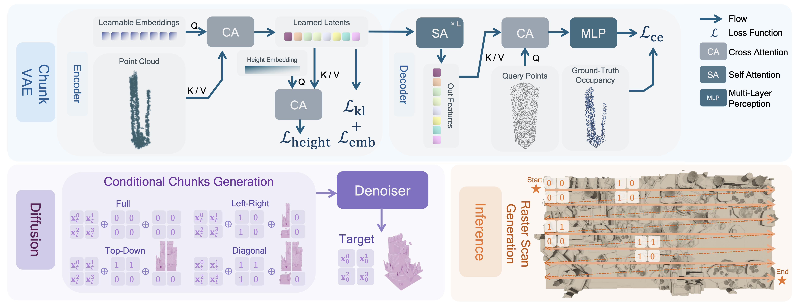

Model
Zoom In Street Views

In this paper, we explore the task of generating expansive outdoor scenes, ranging from castles to high-rises. Unlike indoor scene generation, which has been a primary focus of prior work, outdoor scene generation presents unique challenges, including wide variations in scene heights and the need for a method capable of rapidly producing large landscapes. To address this, we propose an efficient approach that encodes scene chunks as uniform vector sets, offering better compression and performance than the spatially structured latents used in prior methods. Furthermore, we train an explicit outpainting model for unbounded generation, which improves coherence compared to prior resampling-based inpainting schemes while also speeding up generation by eliminating extra diffusion steps. To facilitate this task, we curate NuiScene43, a small but high-quality set of scenes, preprocessed for joint training. Notably, when trained on scenes of varying styles, our model can blend different environments, such as rural houses and city skyscrapers, within the same scene, highlighting the potential of our curation process to leverage heterogeneous scenes for joint training.
@misc{lee2025nuisceneexploringefficientgeneration,
title={NuiScene: Exploring Efficient Generation of Unbounded Outdoor Scenes},
author={Han-Hung Lee and Qinghong Han and Angel X. Chang},
year={2025},
eprint={2503.16375},
archivePrefix={arXiv},
primaryClass={cs.CV},
url={https://arxiv.org/abs/2503.16375},
}